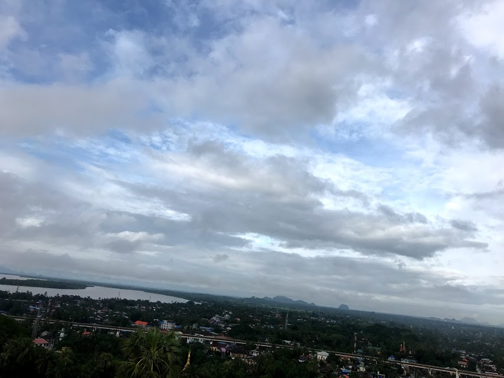

CHANGE THE WORLD
PowIs Project Team Homepage

In case
Welcome to the PowIs Project home page! !
PowIs is an organization conducting research to innovate the world using technology and IT.
Twitter: @PowIsProject
E-Mail: powisproject ** @ ** gmail.com
Goal of PowIs
The first one is to enrich the education of developing countries using PowIs For Education technology and IT.
And human resources who children in developing countries become adults in the future and can make things such as engineers, programmers, scientists, etc.
And the goal is to nurture human resources with employment anywhere in the world, enrich the country (developing country) as a whole.
PowIs Maps The second is to use innovation in technology and IT to make the world innovate.
I still invented something that nobody has seen before
The goal is to create innovation.
Activity content
PowIs For Education Team
· Field survey / Examining the world education / Personal computer research of 10,000 yen per unit
Example: In the field survey, on the Internet, I visited rural areas, hospitals and schools in Myanmar.
We have mainly studied power supply infrastructure · communication infrastructure · education.
In development, I am researching useful computers on the site.
PowIs Maps Team
· Survey of tourist spots / Survey of sightseeing information / Development of services
Make it accessible to the content of maps and tourist information comfortably for tourists in the period of 2020 and
The goal is to create a map specialized for barrier-free.
In case
Activities up to now
Now Makeing ...
idea & Project Plan
December 2017 PowIs Project (FIRST)
"Making electricity supply infrastructure in areas with no electric power supply in developing countries using solar panels and electric assisted bicycles"
May 2018 PowIs Project 2
"Using Raspberry Pi to enrich education in developing countries"
June 2018 PowIs Project 3
"We considered Andoroid Medical Sensor to enhance medical care in areas where medical facilities in developing countries are not substantial"
THANK YOU VERY MUCH
SENT ME E-MAIL: powisproject@gmail.com
Group requirement
Name: Student Organization PowIs (Powers)
Established date: November 2017
Department: PowIs For Education / PowIs Maps >> Business Research Division (Business Team) and Technology Development Division (Project Team)
(I'm studying business administration at the management research department, I am developing at the technology development department.)
E-MAIL: powisproject@gmail.com
Main activities: Research on developing country support · Map creation
【Contact】
Thank you very much for seeing the homepage.
If you have any questions or concerns about PowIs, please contact the following e-mail address.
powisproject@gmail.com